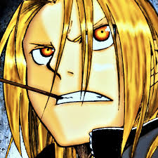

| Características | Detalhes |
|---|---|
| Tem baixa estatura | Tem um automail, um braço de ferro |
| É um alquimista federal | Tem um Simbolo da Cruz de Flamel em seu sobretudo |
| Seu irmão é uma armadura por conta de uma transmutação mal sucedida | Ele e seu irmão estão fundidos pela alma |
Para saber mais clique no link da wiki aqui!
Site Desenvolvido pelo aluno Gabriel Rodrigues do 2° TINF-IFTM Campus Patrocínio